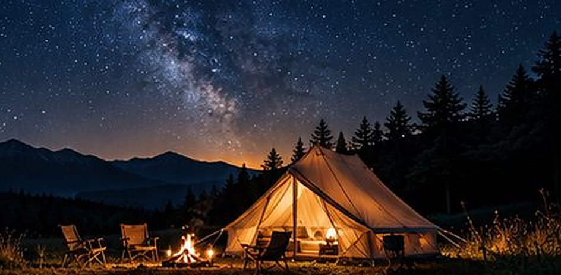
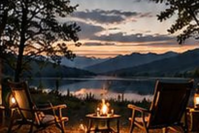

歩く
サイトの裏から森の小道に入れます。受付でお渡しする手描きの地図に、道を三本書いてあります。飽きたら引き返してください。
- ひとまわり
- 約20分。カラマツ林を抜けて戻る、平らな道
- 沢まで
- 往復 約50分。小さな沢で折り返し。帰りはゆるい登り
- 見晴らし台
- 往復 約1時間半。山並みが見える草地まで。水筒を持って
道に街灯はありません。日没の1時間前には戻ってきてください。長靴は受付で貸し出しています。
はじめての方に向けた、ひとつの例です。寝坊しても、誰も怒りません。
下へ進むと、足あとが道をたどります。時刻はめやすです。全部こなす必要はありません。
受付で薪とランタン、手描きの地図を受け取ります。荷ほどきは五分で終わるので、あとは椅子に座るだけです。
明るいうちに、裏の小道を歩いておきます。貸切風呂の札も、このあたりで取っておくと安心です。
火おこしから始めます。うまくつかなくても大丈夫。スタッフが着火剤を持って、近くで待機しています。
ランタンを消すと、見える星が増えます。曇りの日は、火を眺める時間が長くなるだけです。
火を落として、寝床へ。まっ暗で静かなので、いつもより早く眠くなります。
豆を挽くところから。鳥のほうが早起きなので、目覚ましはいりません。

荷物をまとめて受付へ。服についた煙の匂いは、おみやげです。
2泊する方は、二日目の昼がまるごと空きます。昼寝に使う人が多いです。
順番も、全部やる必要もありません。気が向いたものだけどうぞ。椅子から動かないのも、立派な過ごし方です。
サイトの裏から森の小道に入れます。受付でお渡しする手描きの地図に、道を三本書いてあります。飽きたら引き返してください。
道に街灯はありません。日没の1時間前には戻ってきてください。長靴は受付で貸し出しています。

夕食のほかに、何か足して焼く人が多いです。火があると、何か焼きたくなるものです。受付横の小さな売店に、焼けるものを置いています。

ランタンを消して、椅子を倒すだけ。目が慣れるまで、十分ほどかかります。そのあいだスマホを見ると、また最初からです。
右上のスイッチで、このサイトも夜にできます。曇りの日の予行演習にどうぞ。
標高はおよそ1,100メートル。ふもとの町より、いつも5℃ほど低いと思ってください。気温は目安で、年によって前後します。

| 季節 | 夜の気温 | 森のようす | 着るもの | 泊まれるところ |
|---|---|---|---|---|
| 春 4〜5月 | 2〜8℃ | カラマツの芽吹き。朝は霜がおりる日も | 冬の上着と手袋 | キャビン、テント |
| 夏 6〜8月 | 14〜18℃ | 昼は木陰が涼しい。夕立と虫は多め | 長袖一枚、虫よけ | キャビン、テント |
| 秋 9〜11月 | 0〜10℃ | 10月中旬から紅葉。空気が澄んで星が増える | フリースと厚手の靴下 | キャビン、テント |
| 冬 12〜3月 | −10〜−2℃ | 雪。音がなくなる。焚き火がいちばんありがたい | スキー場に行く格好 | キャビンのみ |
表は横に動かせます。
12月から3月にお車で来る方は、冬用タイヤが必要です。くわしくはアクセスのページへ。
チェックイン15:00から
チェックアウト10:00まで